A panoramic study of industrial scale and material weathering, balancing the massive hull with cranes, cables and scattered fragments. The restrained sky and open paper give the rusted structures a monumental, almost archaeological presence.
Dhaka, Bangladesh • Artist dossier 2026
Rasedul IslamRiad
Visual Artist · Curator · Art Researcher · Exhibition Designer · Organiser · Exhibition Manager
Exhibition Manager, National Sculpture Gallery, Bangladesh
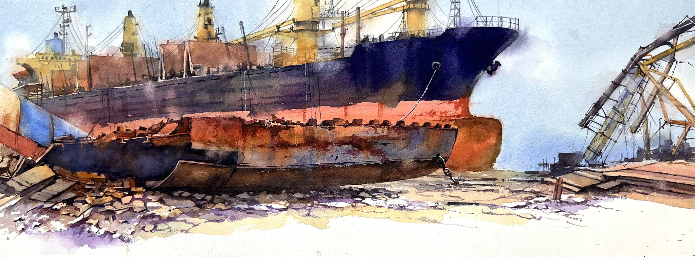
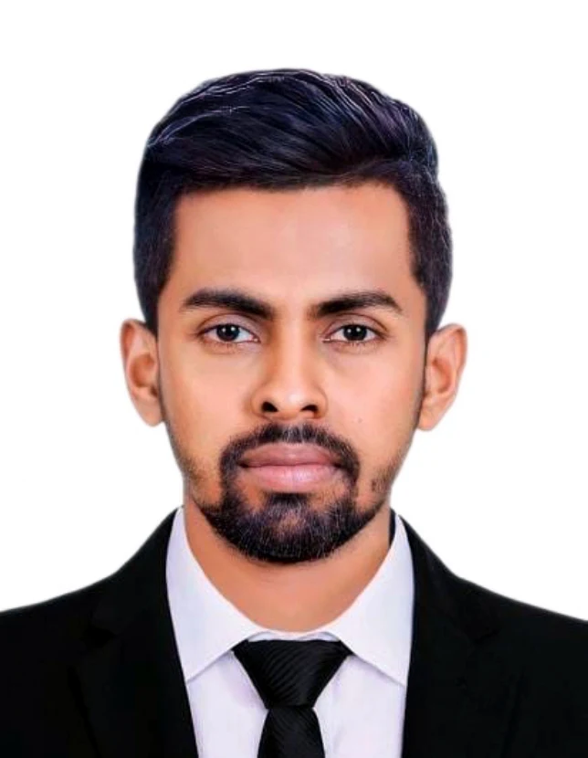
Material, Place & MemoryPractice • Research • Exhibition-makingSelected works
Watercolour as observation and atmosphere.
This selection reveals a watercolour practice grounded in observation but driven by atmosphere. Industrial sites are treated as living landscapes; boats become vessels of memory and vernacular knowledge; rural and historic architecture register the continuity of place; lotus studies shift the same concern with structure and light toward a more intimate natural scale.
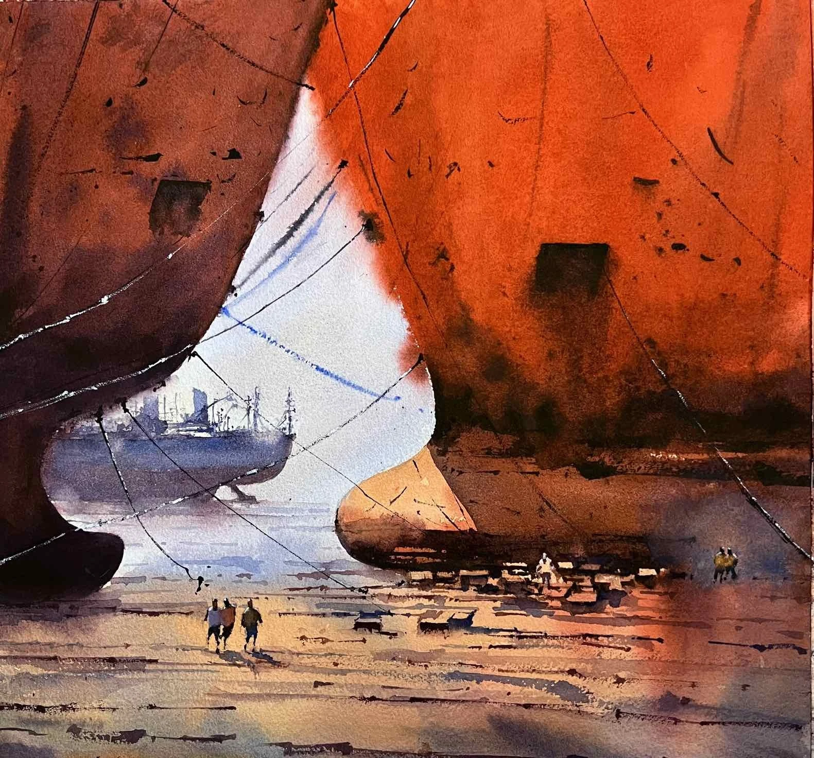
Compressed between towering hulls, small human figures intensify the sense of scale. Saturated orange and brown washes transform the ship-breaking environment into a study of labour, heat, weight and the passage of industrial time.
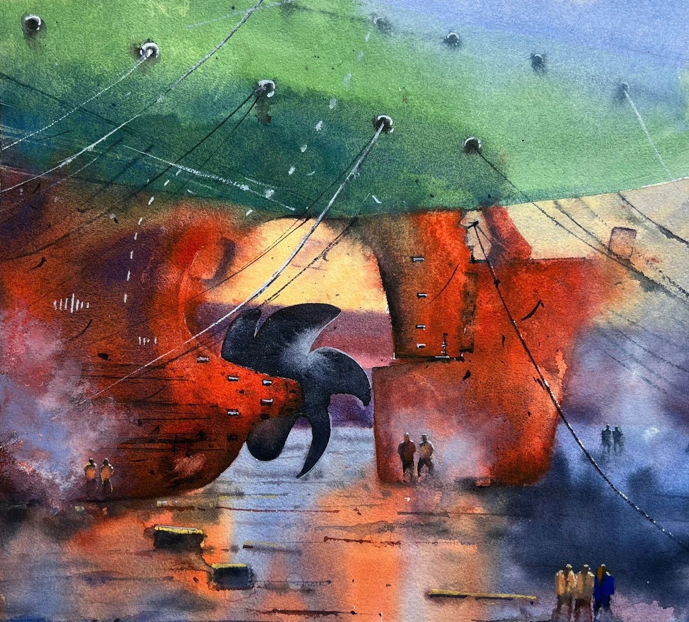
The underside of a vessel, its propeller and anchoring lines create an abstracted geometry of force and suspension. Green and red-orange colour fields are held together by precise linear marks and passages of softened atmosphere.
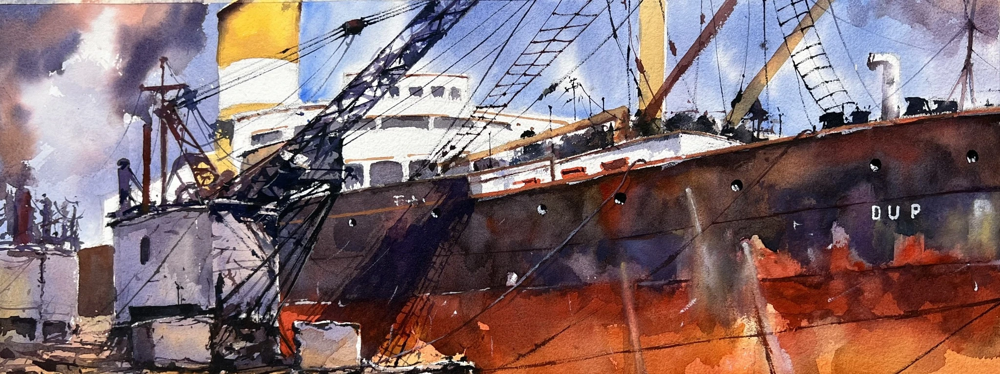
A dockside vessel is embedded within a dense network of cranes, cables and port infrastructure. Broad transparent washes and active linework capture the visual energy of a working harbour while preserving the luminosity of watercolour.
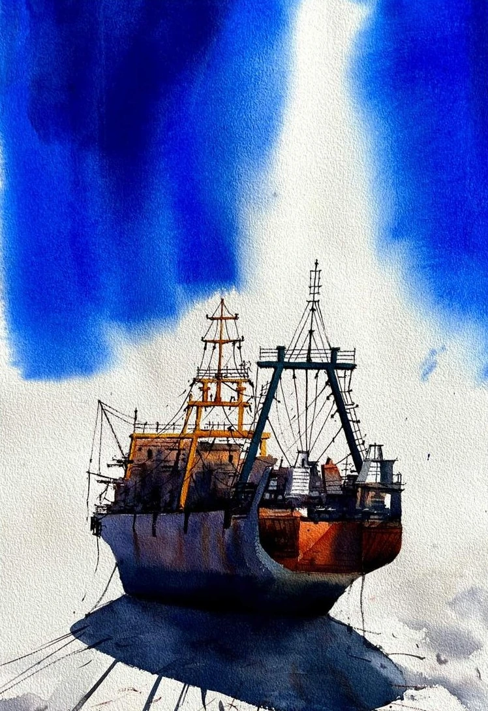
A frontal stern view turns the working ship into a near-monumental form. Electric blue washes expand around the vessel, allowing negative space and shadow to heighten its weight, symmetry and mechanical complexity.
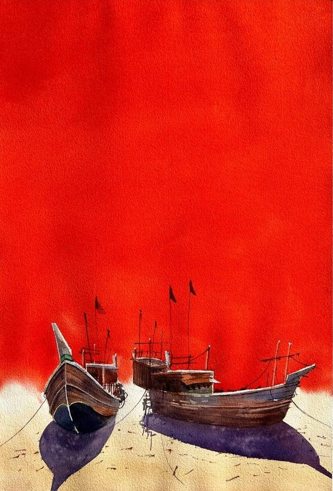
Two traditional wooden boats rest beneath an intense red field. The reduced composition shifts attention toward silhouette, hand-built structure and elongated shadow, giving the familiar riverine vessel a quiet, iconic presence.
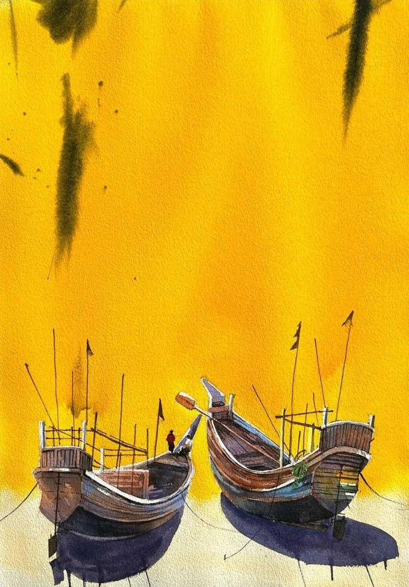
A cluster of vernacular boats sits against a vivid yellow ground. Repeated masts, hull curves and shadows create a rhythmic arrangement that celebrates local boat-building knowledge through an economical, contemporary composition.
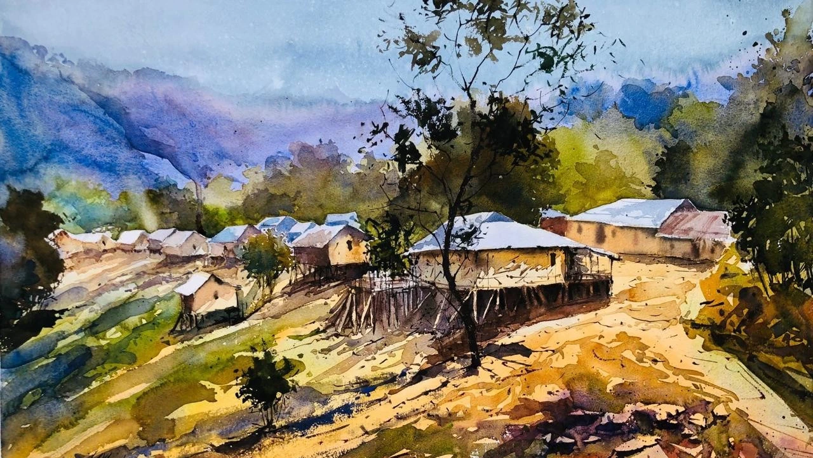
The hillside settlement is rendered through layered washes that connect houses, pathways, trees and distant slopes. Loose mark-making preserves the vitality of on-site observation while emphasizing the relationship between community and terrain.
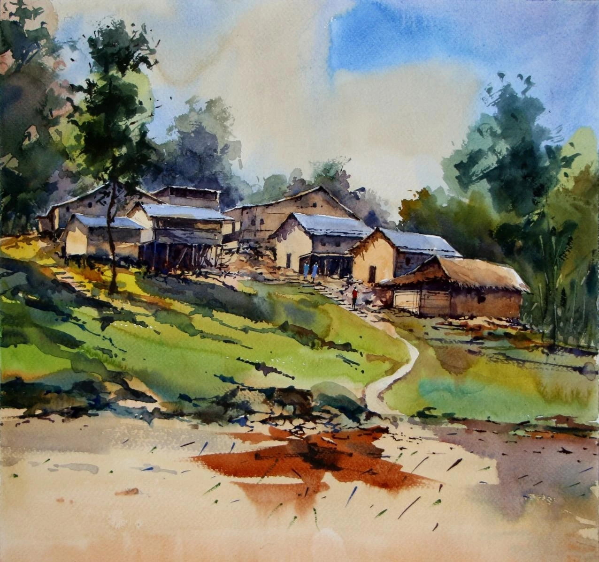
A village path leads through modest homes and cultivated ground, framed by dense vegetation and open sky. The work records everyday architecture without sentimentality, using fluid greens and earth tones to suggest lived continuity.
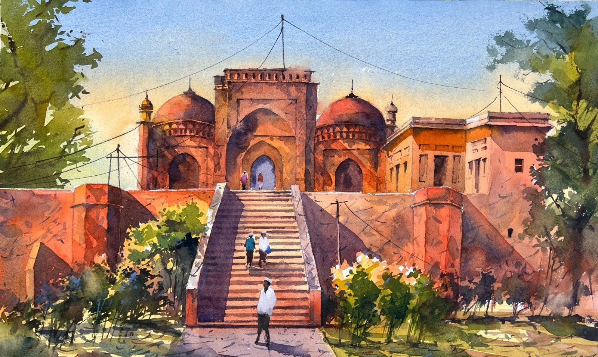
Warm terracotta architecture, domes and a central stairway organize this heritage study. Strong perspective and selective detail give the site clarity, while softened foliage and atmospheric washes keep the image rooted in lived place rather than pure documentation.
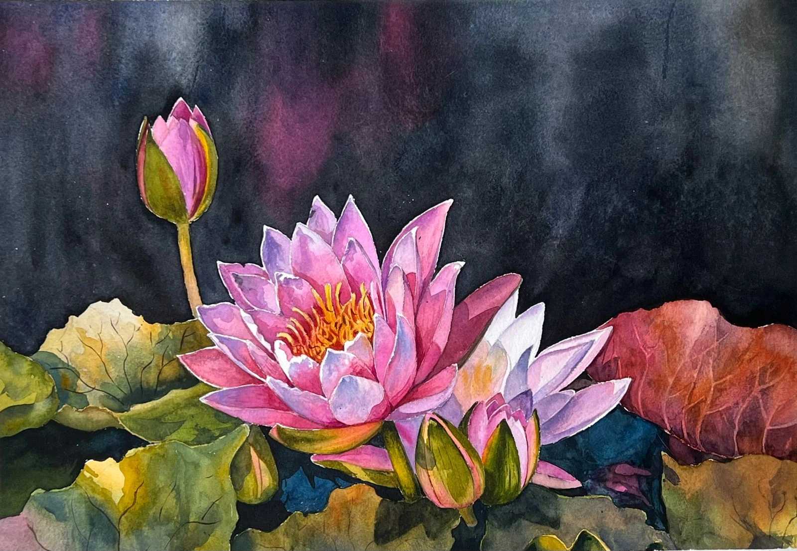
Luminous pink lotus blossoms emerge from deep foliage and a dark atmospheric ground. The contrast between delicate petals and dense surrounding colour turns the floral subject into a meditation on light, growth and visual stillness.
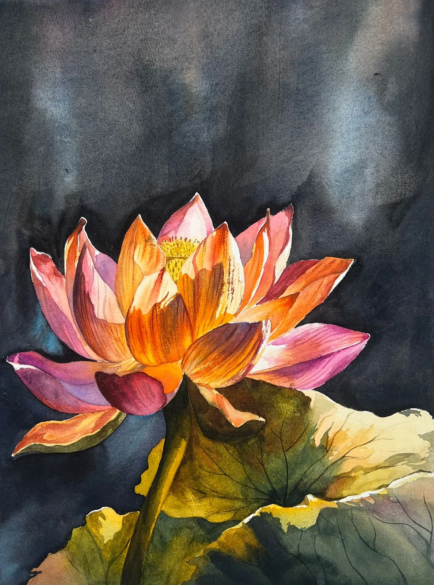
A single lotus dominates the composition, its orange, pink and violet petals unfolding against a charcoal-blue field. The close framing and layered washes emphasize fragility, structure and the quiet drama of transformation.
Rasedul Islam RiadDhaka, Bangladesh
Professional profile
Practice, research & exhibition-making.
Rasedul Islam Riad is a Bangladeshi visual artist, curator, art researcher, exhibition designer, organiser and exhibition manager at the National Sculpture Gallery, Bangladesh.
Trained in Drawing & Painting at the Faculty of Fine Art, University of Dhaka, he holds BFA and MFA degrees and is currently pursuing a PhD in Fine Arts (Art Management & Curatorial Practice) at the same institution.
His practice moves across watercolour, painting, sculpture, ceramics, mixed media, installation, photography and community-based art. The selected works foreground a sustained engagement with maritime industry, ship-breaking yards, ports, vernacular boats, rural settlements, historic architecture and botanical forms. Across these subjects, Riad combines close observation with expressive washes, structural drawing and bold fields of colour.
Alongside studio practice, he works across curatorial research, exhibition design, artist coordination, cultural programming, workshop facilitation and project management. His professional approach connects artistic production with exhibition-making, public engagement and cross-cultural exchange.
BasedDhaka, Bangladesh
Primary fieldsVisual Art, Curatorial Practice, Exhibition Design
ResearchArt Management & Curatorial Practice
InstitutionNational Sculpture Gallery, Bangladesh
Artist statement
Material, Place & Memory
“My work begins with observation of places where material, labour, memory and landscape meet.”
Ports, shipyards, boats, village architecture, historic structures and plant forms are not treated simply as subjects; they become records of human movement, resilience and time. In watercolour, I use fluid washes, abrupt edges, exposed paper and saturated colour to balance documentary specificity with atmosphere and abstraction.
In sculpture and ceramic practice, I am drawn to the physical intelligence of clay, metal and mixed materials. Across studio, curatorial and community contexts, I seek to create work that is visually immediate while remaining attentive to social memory, local knowledge and the changing environments of Bangladesh and the wider region.
Professional practice
Research, education & technical expertise.
Riad’s practice moves between studio production and public-facing cultural work: painting and sculpture, curatorial research, exhibition design, artist liaison, community engagement and international exchange.
30+Art camps completed
15+Multidisciplinary workshops
BFA + MFADrawing & Painting, University of Dhaka
PhDFine Arts, ongoing
Education & current practice
- PhD in Fine Arts (Art Management & Curatorial Practice) — ongoing, Faculty of Fine Art, University of Dhaka
- Master of Fine Arts (MFA), Drawing & Painting — 2018, University of Dhaka
- Bachelor of Fine Arts (BFA), Drawing & Painting — 2016, University of Dhaka
- Exhibition Manager — National Sculpture Gallery, Bangladesh
- Independent artist, curator, art researcher, exhibition designer and organiser
Selected disciplines
- Watercolour, oil painting, acrylic, mixed media, texture art, drawing, charcoal and pastel
- Sculpture in clay, metal and mixed materials; ceramic art; terracotta; Raku and pit-fire techniques
- Installation art, set design, exhibition design and spatial presentation
- Photography, printmaking, puppet making, mask making and archival practice
- 2D / 3D design and animation, wall painting, community art facilitation and workshop design
Recognition
Selected awards & international engagement.
Highlights from a professional record spanning national and international exhibitions, workshops, art camps and cultural exchange.
2025
Novera Ahmed Award
Nepal Art Expo 2025, Kathmandu, Nepal.
2025
Best Award
4th International Khulna Art Exhibition, Bangladesh Shilpakala Academy.
2022
Honourable Mention Award
19th Asian Art Biennale, Bangladesh Shilpakala Academy.
2024
Artist Talk
Visva-Bharati University, Santiniketan, West Bengal, India.
2024
Japan International Art Expo
Tokyo Metropolitan Art Museum, Tokyo, Japan.
2023
Bali Art Expo
Sika Art Gallery, Bali, Indonesia.
Complete professional record
Exhibitions, awards, workshops, memberships & more.
View the complete structured CV online or download the 21-page professional artist dossier with profile, curriculum vitae and selected artworks.